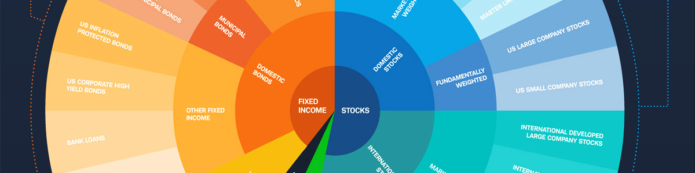

The Importance of Financial Strategy | Bizfluent
- UK Strategy for Financial Wellbeing | The Money and ...
Introduction A financing strategy is integral to an organisation’s strategic plan. It sets out how the organisation plans to finance its overall operations to meet its objectives now and in the future. A financing strategy summarises targets, and the actions to be taken over a three to five year period to achieve the targets. It also clearly states key policies which will guide those actions. - This investment strategy seeks financial return and ...
With an effective financial strategy, you can improve your bottom line by several thousand dollars each year. Through financial strategy, you can meet day-to-day expenses, budget for big-ticket purchases and invest money to generate additional wealth. You will outline your financial goals before coordinating a strategy. - America’s financial war strategy - Goldmoney
Strategy extract This Strategy aims to improve financial capability across the UK. That means improving people’s ability to manage money well, both day to day and through significant life events, and their ability to handle periods of financial difficulty. - H.R.1756 - Money Laundering and Financial Crimes Strategy ...
Setting goals for your money is the first step in designing a sound financial plan. Whether you hope to save and invest enough to retire early or simply need to build up an emergency fund, the right financial strategy can strengthen your efforts in reaching those goals.If you need some direction on which tactics work best, here are 10 ways to improve your odds of achieving financial success. - Top 10 Tips for Financial Success - Make Money Personal
A budget is the financial strategy for your business. Guide to writing a business plan (DOC 144.5 KB) Benefits of setting a financial strategy. As you put together your financial strategy, you'll develop a plan of action for your goals and objectives, which will guide you and your business activities towards improved business performance. - The Importance of Financial Strategy | Bizfluent
Easy 4 Step Financial Strategy To Reach Your Money Goals. Now that you have your list of financial goals, you’ll need a strategy in order to achieve them. This 4-step financial strategy will guide you through the best ways to achieve your goals. 1) Define Your Financial Goals Using SMART. - What Is a Financial Strategy? | Sapling
The UK Strategy is the ten-year framework which will help achieve the vision of everyone making the most of their money and pensions. MaPS will play a key role in achieving this vision, by supporting and working with a wide range of other organisations and by delivering services where appropriate. - 8 Financial Tips for Young Adults - Investopedia
To help you get started, we'll take a look at eight of the most important things to understand about money.These financial tips for young adults are designed to help you live your best financial life. - 10 Financial Strategies to Reach Your Money Goals - SmartAsset
A financial strategy is an important aspect of any business. Financial strategies should be discussed and shared with company shareholders, executives and employees, so everyone is on the same page financially. Many companies hire a certified public accountant (CPA) or other finance executive to help create and ... - Developing a financing strategy | Humentum
The U.S. repeats this cycle to make money: printing money, exporting money overseas, and bringing money back. The U.S. has thus become a financial empire. In other words, America’s wealth is sustained by a pump-and-dump operation facilitated by the dollar’s reserve status, replacing genuine industrial production.

START YOUR BUSINESS
BUSINESS IDEAS
BUSINESS PLAN
LEGAL
PERMITS/LICENSES
MARKET RESEARCH
OFFICE SUPPLIES
FINANCE YOUR BUSINESS
FUNDING/FINANCING
ACCOUNTING
TAXES
SALARY/PAYROLL
MANAGE YOUR BUSINESS
BUSINESS OPERATIONS
MANAGEMENT
HUMAN RESOURCES
MARKETING
SALES
DOCUMENTS FOR YOUR BUSINESS
BUSINESS IDEAS
BUSINESS PLAN
LEGAL
PERMITS/LICENSES
MARKET RESEARCH
OFFICE SUPPLIES
FUNDING/FINANCING
ACCOUNTING
TAXES
SALARY/PAYROLL
BUSINESS OPERATIONS
MANAGEMENT
HUMAN RESOURCES
MARKETING
SALES
DOCUMENTS FOR YOUR BUSINESS
Share It Share Tweet Post Email PrintACCOUNTING
The Importance of Financial Strategy
By: Andra Picincu Updated October 15, 2018 Stock Market image by Paul Heasman from Fotolia.com By: Andra Picincu Updated October 15, 2018 Share It Share Tweet Post Email Print RelatedThe Financial Objectives of a Business
Learn More →Any business big or small needs a financial strategy. Its role is to establish how the company will use and manage its financial resources to pursue its objectives. Basically, it outlines the steps you need to take to grow your business and reach your financial goals. Think of it as a road map for your company's future.
What Is Strategic Financial Management?
In order to develop a consistent financial strategy, it's necessary to have a plan and define your objectives. That's where strategic financial management comes in. This process encompasses the financial aspects of your business plan, such as revenue and expenses, investment decisions, capital budgeting and cash management.
At the most basic level, you need to precisely define your business goals, assess your current and potential resources and develop a plan for using those resources effectively. There's a big difference between trying to generate revenue and having a clear financial goal and deadline in mind. Strategic financial management involves studying the market, collecting data, forecasting cash flow and implementing a strategy to meet your objectives.
If you're a startup or a small business, decide who will be in charge of the financial decision-making process. You may be a skilled entrepreneur with innovative ideas, but this doesn't necessarily mean you have strong finance skills. Depending on your budget, you can either build a finance department for your company or hire a consultant.
Certain tasks like payroll and cash management can be outsourced to an accountant or bookkeeper. Other tasks, such as strategic planning, dividend decisions and profitability management, require expert knowledge.
If you cannot afford to hire an entire team, employ an experienced financial manager to handle these aspects. A professional can identify optimum investment and financial opportunities, maximize the returns and mitigate risks.
Why Have a Financial Strategy?
A common misconception is that only large companies require a financial strategy. Even if you're just getting started, you need a clear plan to optimize your return on investment and make smart decisions. Strategic financial management can help you set realistic goals, identify potential pitfalls and develop an actionable road map for your business.
Take the time to read articles on planning and decision making. Research other organizations in your niche, check out case studies and learn how to turn risks into opportunities. Consult a financial adviser to help you get started.
A well-planned financial strategy can take your business to the next level and give you a competitive advantage. It will also help you eliminate distractions and give you a clear goal on which to focus. In the long run, it can increase your profits and reduce debt. You will be able to allocate resources more effectively and avoid unnecessary expenses.
Key Elements of Financial Management
Strategic financial management has the role to establish that your organization will finance its operations to achieve each milestone and maximize its profits. Liquidity and working capital decisions, budgeting, financial planning and financial control are all key aspects that you need to take into account. Also, it's important to determine how your financial strategy fits into your business plan and what changes are needed to ensure it stays relevant.
First, determine where your business is right now. Analyze existing resources and opportunities as well as the risks your company is facing. Conduct a cash-flow analysis. Next, set key financial targets for the next two, three or five years. Get everyone involved in the financial decision-making process, including your marketing department, sales teams and business partners. Ask them to describe the current situation and provide detailed reports.
Use this information to develop a financial strategy that aligns with your goals. Make sure that enough funding is available to meet the needs of your company. Review the financial plan every few months and make adjustments if necessary.
References
Investopedia: Strategic Financial Management Entrepreneur: Three Reasons Why Startups Should Focus on Financial Management State Government of Victoria: Align Your Finances to Strategy BBN Times: Importance of Financial Planning in BusinessWriter Bio
Andra Picincu is a digital marketing consultant with over 10 years of experience. She works closely with small businesses and large organizations alike to help them grow and increase brand awareness. She holds a BA in Marketing and International Business and a BA in Psychology. Over the past decade, she has turned her passion for marketing and writing into a successful business with an international audience. Current and former clients include The HOTH, Bisnode Sverige, Nutracelle, CLICK - The Coffee Lover s Protein Drink, InstaCuppa, Marketgoo, GoHarvey, Internet Brands, and more. In her daily life, Ms. Picincu provides digital marketing consulting and copywriting services. Her goal is to help businesses understand and reach their target audience in new, creative ways.
Start Your Business Finance Your Business Manage Your Business About Us Accessibility Terms of Use Privacy Policy Copyright Policy Contact Us Careers Manage Preferences Copyright 2020 Leaf Group Ltd. / Leaf Group Media, All Rights Reserved.